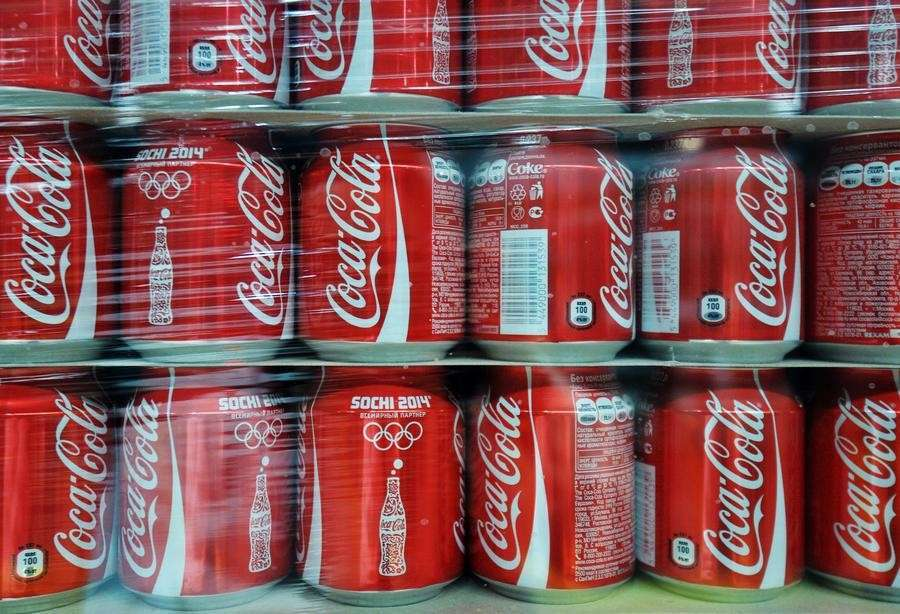

Интересные факты про колу, которые вы могли не знать!На всей нашей планете существует только 2 страны, где напитки компании Coca-Cola не продают вообще – на территории Кубы и в Северной Корее. Возможно, граждане этих стран очень даже любят газировку, но у местных властей свои счеты с американцами.В коле содержится очень сильная кислота, поэтому с ее помощью можно чистить очень грязные поверхности, когда не обойтись обычным порошком и тряпкой. Эффективность этой газировки можно сравнить с очень едкими чистящими средствами, во время использования которых рекомендуется надевать защитные перчатки для рук.